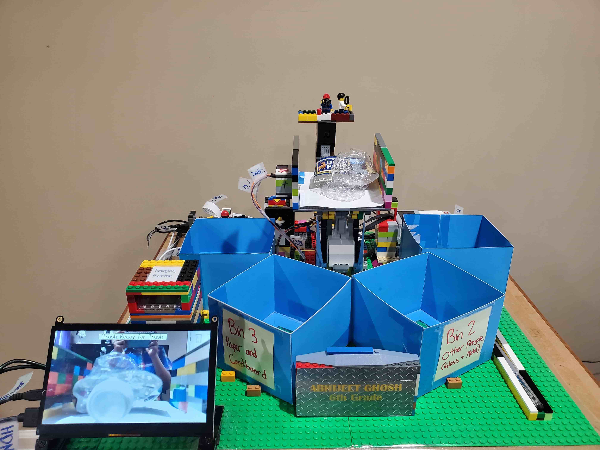

Recycle Sorter With AI
Broadcom MASTERS 2020

Project Summary: I love to RECYCLE! Recently, I learned about a problem called recycle contamination, where trash contaminates recyclable items. Furthermore, different types of recyclables get mixed. Sorting this collection of recyclables is a significantly labor-intensive job in hazardous work conditions and prone to human error.
I questioned if Artificial Intelligence (AI) and robotics can be used to detect and categorize day-to-day waste items with high accuracy. If yes, then can a robot perform physical sorting of day-to-day waste instead of humans? What would be the accuracy of this categorization? Will the problem of recycle contamination be addressed such that recyclables are recycled, making an overall positive impact on the environment?
I collected hundreds of categorized images of various waste items and used these to train Google’s TensorFlow image classification AI model for six categories of waste. Once I got the model trained, I started my experiment by testing the AI with uncategorized day-to-day waste items not used in the training process and recorded the accuracy of the trained AI model's image classification. I achieved an overall accuracy of 87%.
Furthermore, I designed and built a recycle sorting robot with a Raspberry Pi and Mindstorms EV3 parts. When waste is placed on this robot, the robot detects it with the help of a motion detector and takes a picture of the waste. Then it uses my trained image classification AI model (the robot’s brain) to detect the type of waste it is and dumps the waste into its respective bin.